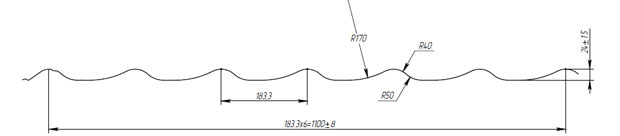
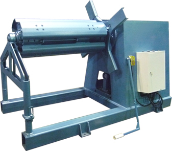
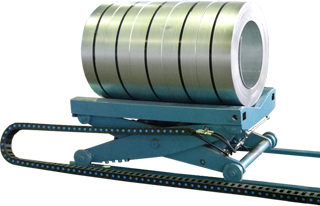
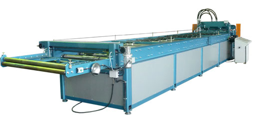

Линии «монтеррей» <H1>
класс Премиум <H3>
Область применения:
Автоматизированная линия позволяет методом холодной прокатки с последующей штамповкой формировать панели металлочерепицы заданной длины из тонколистовой рулонной стали с полимерным покрытием.
Применяемый металл:
Прокат рулонный тонколистовой оцинкованный и с декоративно- защитным лакокрасочным покрытием по ГОСТ Р 52146-2003 оцинкованный по ГОСТ Р 52246-2004.
Ширина ленты – 1250±5 мм.
Толщина – 0,37-0,6 мм.

Состав линии <H2>
Автоматический разматыватель рулонов RG-10 <H3>

| Тип - Консольный с приставной страховочной опорой |
| Вес - 2030 кг |
| Грузоподъёмность - 10 000 кг |
| Принцип разжима лопастей разматывателя - «клиновой» |
| Привод разжима лопастей разматывателя - Гидравлический «Duplomatic» |
| Ограничения хода разжима - 480-610 мм |
| Привод разматывателя - Асинхронный, частотно-регулируемый инвертором «Веспер» |
| Мощность привода разматывателя - 7,5 кВт |
| Скорость размотки металла до 50 м/мин |
| Ширина разматываемого рулона(заготовки) - До 1270 мм |
| Внутренний диаметр рулона - 480-600 мм |
| Наружный диаметр разматываемого рулона - 1500 мм |
| Режим работы - автоматический |
| Слежение за петлей - Выносная штанга |
| Аварийный датчик отключения линии при натяжении петли - Концевой выключатель |
| Габаритные размеры (LxBxH) - 2300х1060х1700 мм |
| Возможность реверсивного вращения( в обратную сторону) - предусмотрено |
Телега загрузочная TG-10 <H3>

| Грузоподъемность – 10 т. |
| Привод подъема - гидравлический (гидростанция разматывателя) |
| Под рулон шириной – 1250 мм. |
| Электропривод перемещения по рельсам. Мощность привода – 1,5 кВт |
| Длина рельсового пути – 3,5 п.м. |
Стан профилегибочный "Монтеррей" <H3>

| Производительность - 10 м.п./мин |
| Оснащается сервоприводом «SEW-EURODRIVE» повышенной производительности ( Германия) |
| Количество клетей - 19 шт |
| Материал формующих роликов - Сталь 40Х ГОСТ 4543-71 термоупрочненные |
| Толщина металла - 0,37-0,6 мм |
| Блок штампа и гильотины - гидравлический, повышенной мощности |
| Режим заправки рулона - ручной |
| Ширина рабочей зоны - 1250 мм |
| Направляющий стол - регулируемый, с тремя не приводными входными валками |
| Установленная мощность мотор-редуктора - 7,5 |
| Приводные валы - все нижние |
| Привод валов - цепной |
| Диаметр валов - 92 мм |
| Точность по длине профилей - ± 1-2 мм |
| Датчик движения ленты - круговой импульсный энкодер «ЛИР» |
| Управление - программируемый контроллер |
| Габаритные размеры (LxBxH) - 9000х1680х1750 мм |
| Масса - 8 000 кг |
| Трос-Stop, с кнопкой Stop - Аварийный |
| Блок штампа и гильотины - гидравлический |
| Установленная мощность - 11 кВт |
| Материал ножей гильотины - ХВГ, Х12М Закалка 57…60 HRC |
| Штампующее устройство повышенной производительности |
| Система смазки листа в месте штамповки. |
| Материал штампа - Сталь 40Х поверхностное упрочнение 58-60 HRC глубина слоя- 1,5 мм |
| Глубина штамповки - 16,21 мм |
| Привод - Гидравлический пр-ва Италия |